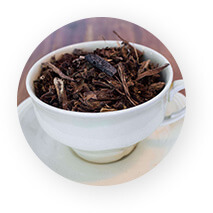
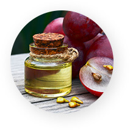
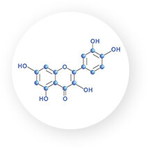
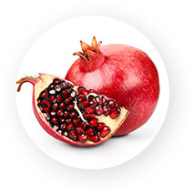
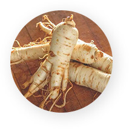
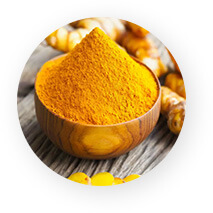
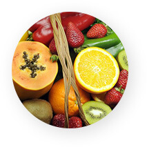

And it’s as easy as adding a few simple ingredients to your diet.
That’s right…Just a few simple ingredients available at most grocery stores is enough to boost your immune system, putting an end to your wicked toenail fungus.
And what makes these nutrients so powerful…Is their ability to target the overgrowth of candida…
Improving your immune function while enhancing your body’s ability to heal itself. Said another way…These nutrients tackle the 3 ROOT causes of toenail fungus.
All at once! But before you run to the store and grab yourself a multii-vitamin...
There’s something you need to know. There are specific nutrients that work better than others to combat the three ROOT causes of toenail fungus. Nutrients with a proven track record, backed up by real science…
The first nutrient is called Graviola.

Graviola is a small evergreen tree that grows in the Amazon Rainforest.
And it’s FULL of bioactive compounds.
It contains a bounty of vitamins and minerals, and loads of antioxidants.
And it’s a powerful stimulator of the immune system.
In one study published in the journal Evidence Based Complementary and Alternative Medicine…

Researchers were able to demonstrate the Graviola is able to “activate” the immune system…
Making it one of the most powerful natural stimulators of immune function.
It was particularly powerful at activating macrophages…
A type of white blood cell that fights tissue infections.
In particular fungal tissue infections.
In a study published in Frontiers in Immunology researchers had this to say about Macrophages.
“Macrophages are the first line of defense against invading pathogens and may regulate host immune responses.”
And with Graviola you’re getting a powerful immune system boost immune system and in particular macrophage activity.
The next immune boosting nutrient is Red Raspberry Juice Extract.
Red Raspberry Juice Extract is another powerful immune system stimulator.
In a review of the literature published in the journal Advances in Nutrition researchers found that red raspberry juice extract contained a variety of immune stimulating properties.

Their findings suggest that red raspberry fruit, including various extracts and individual components, have anti-inflammatory, antioxidative, and metabolic-stabilizing activity.
In other words, red raspberry juice extract was a potent immune system stimulator.
The next immune system powerhouse is Green Tea.

Green tea has a long history in ancient medicine.
And more recently science has finally been able to quantify just how powerful Green Tea really is.
In particular a compound in Green Tea called epigallocatechin-3-gallate (EGCG).
In one Harvard study published in the journal Food & Function researchers found that EGCG powerfully stimulated the immune system.
And in a separate study published by a team of Turkish researchers, EGCG found in green tea was found to have powerful antifungal benefits.

Next up is Beta-Glucan…
Beta-glucans are sugars that are found in the cell walls of bacteria, fungi, yeasts, algae, lichens, and plants, such as oats and barley.
In clinical studies Beta-glucans have been shown to possess powerful immune stimulating properties.

In particular they activate macrophages which I told you about earlier and another type of immune cell called natural killer cells.
Natural killer cells play a significant role in antifungal immunity.

In fact, studies show that Natural Killer Cells are especially important in the fight against invasive fungal infections.
The next immune enhancing nutrient is a powerful mushroom complex.
Including Shitake, Reishi and Maitake mushrooms.
Mushrooms have long been touted for their medicinal benefits and now researchers are starting to see just how powerful they are.

And based on extensive research it's believed that a mixture of the active ingredients from different mushrooms maximizes the immune response by providing multiple stimuli to the body's natural defenses or host defense.
Plus, mushrooms contain an abundance of not only “polysaccharides” but also “protein-bound polysaccharides”, including the much touted beta-D-glucans we talked about earlier, which is one reason they all possess such potent immune-strengthening properties.
And that’s just a fraction of the immune boosting power nutrients I found.
There are tons more including:
-
 Essiac Tea
Essiac Tea
Complex -
 Essiac Tea
Complex -
 Grape Seed
Extract -
 Quercetin
-
 Pomegranate
-
 Cat's Claw
Cat's Claw
-
 Ginseng
-
 Curcumin
-
 Olive Leaf
Olive Leaf
Extract -
 EARA-6 and
EARA-6 and
Lycopene -
 Not to mention
immune boosting
vitamins like
Vitamin C -
 E and Selenium
E and Selenium


These are all some of the most powerful immune boosting power nutrients ever discovered.
When combined they target both directly and indirectly all 3 ROOT causes of toenail fungus.
Protecting you every step of the way.
The truth is…everyone should consider doing something to strengthen their immune systems. But if you suffer from toenail fungus…
Then the nutrients I just told you about are essential. Now I know what you’re probably thinking…I have a strong immune system and I never get sick, yet still have toenail fungus.
So, this approach probably won’t work for me. That couldn’t be further from the truth. As I said, these specific nutrients are known for their ability to maximize immune function.
Making them the perfect weapons
against toenail fungus.

The real question is…Where can you get all of these nutrients in one place.
Well, the short answer is you can’t. Not in any stores anyway. That’s because some of these nutrients are very rare. Sure some stores may carry a few of them. But you’re not going to find them all in one place.
In the right dose or the quality you need.
Sure you may be able to find a “generic” immune support that contains some “ok” nutrients. But it’s not going to have the fire power to rid you of toenail fungus. The problem is that if you do want to get your hands on ALL of these power nutrients.
You’d have to buy them all from different places. You’d find some in a few specialty stores around town and many of them you’d have to find online if you can find them at all. And by the time you did that…
It would easily cost you upwards of $300. Per month!
Not to mention you’d be having to choke down a dozen or more pills each day. And trust me, I know how difficult that can be. Because that’s exactly what I had to do.

But here’s some good news!
Taking all those pills and spending all that money isn’t necessary anymore.
Because you can now get all of these nutrients inside ONE easy to use formulation specifically designed to help rid you of your disgusting toenail fungus.
You see…
As a man dedicated to finally ridding myself of toenail fungus…I was on a mission. I spent every spare minute looking for answers.
I was tired of living with nasty yellow toenails. So when I started using these specific nutrients and was able to abolish my toenail fungus. I realized that there must be thousands or maybe even millions of people who could benefit from my findings.

And that’s why I brought on a research team…I needed experts to take my data and turn it into something powerful. We needed to take these immune-boosting power nutrients. And combine them in the best way possible.
They had to be the purest ingredients available…And they had to be viable, potent and free from contamination. They also had to come from sources with only the highest quality standards. Sources that were held accountable and fully regulated. Once we found our suppliers...We immediately went to work…
Creating the first immune support formula specifically designed to neutralize embarrassing toenail fungus.
A formula designed to…
Rid you of the stigma and embarrassment of grotesque and putrid toenails.
And finally, after close to a year of trial and error…
Fungal Nail Pro was born.

Inside each bottle of Fungal Nail Pro you get 25 highly potent, proven, toenail fungus fighting nutrients strains. Nutrients known for their anti-fungal capabilities and their abilities to support a healthy immune system and improve overall nutrient absorption.
And with the suppliers we found...
You’re getting clinically significant dosages that make it to their target destination. Viable and ready to do their job…
Not cheap ingredients with low potency. Fungal Nail Pro is made in the United States, in a GMP Certified Facility that adheres to the highest quality standards.
But that wasn’t good enough for me.
I wanted to take it one step further. So, I insisted that every batch of Fungal Nail Pro was then third party tested by an independent laboratory.
Which means when you choose Fungal Nail Pro…
You can be sure that you’re getting the most potent combination of immune-boosting nutrients available specifically targeted to eliminate your struggle with toenail fungus. Now if I were you, right about now I’d want to know exactly where I could get my own supply of Fungal Nail Pro.
And I’d be lying if I said it was easy…
You see…
Unlike 99% of the immune support products on the market…Fungal Nail Pro contains only the highest quality, most viable nutrients available and designed specifically to fight toenail fungus.
All in clinically proven dosages. By combining all 25 of these powerful nutrients into one unique and specialized formula.
We’ve created the ONLY immune support formula specifically designed to knock out the most disgusting toenail fungus…
No matter how long you’ve had it. But because of our meticulous production process…It takes months for each batch to be prepared, tested, approved and then shipped.

Plus, we have so many repeat users…People who are NOW fungus free and want to stay that way…Pretty much everyone who tries Fungal Nail Pro…
Keeps taking it!
They love their new Fungus Free lifestyle.
Even recommending it to everyone they know who also suffers from toenail fungus.
Plus, recently Fungal Nail Pro has become the GO TO toenail fungus recommendation by a number of natural-health-oriented physicians and health care professionals.